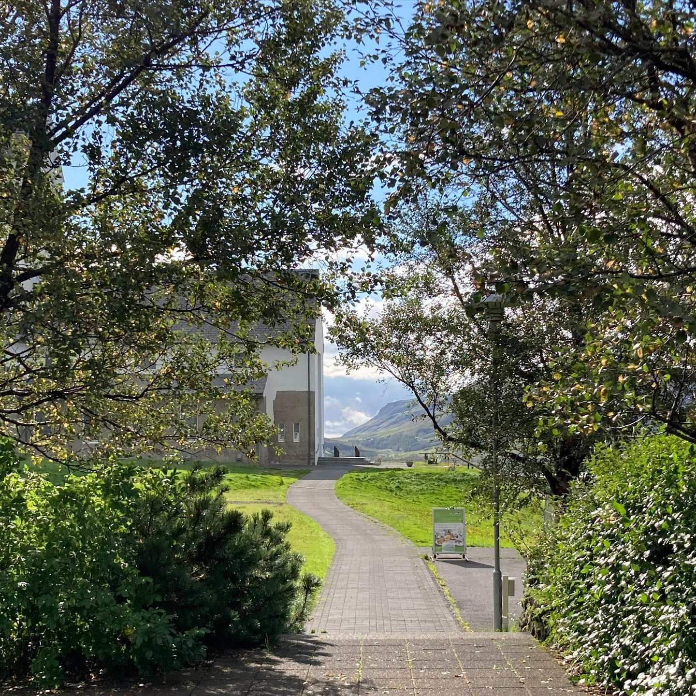

Welcome to Yui Naruse's Portfolio!
I have a little bit of experience working as a research assistant and web designer/developer, currently based in Tokyo.
Although I still lack knowledge and skills in the fields, I have been an abit learner of the related topics and find it incredibly fun to use the skills I'm learning in the real world.
Examples of My Past Projects
- Research on Wildlife Trade
I was in charge of collecting, cleaning and analysing the data of wildlife trade from various sources, including well formated official data from customs/international committees, as well as non-official sources such as personal websites, media outlets. I also checked the previous research in the related field and contributed in writing and publishing the reports (English/Japanese).

- Statistics and Data Analysis using R
I wrote a few project reports for my online statistics/data analysis courses. The projects helped me gain basic understanding in probability theory, inferencial statistics and multiple linear regression models.
- Web Design and Development
I am in charge of maintaining my workplace's website, including the design part (HTML/CSS/JS). I also made it possible to search programs as well as connecting database with another application system. Main languages I used are PHP, JavaScript and SQL, but I also used Python to facilitate my work.
Hello?
Good Evening!